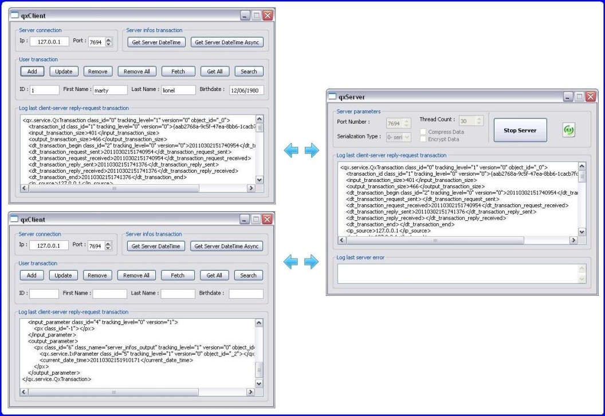
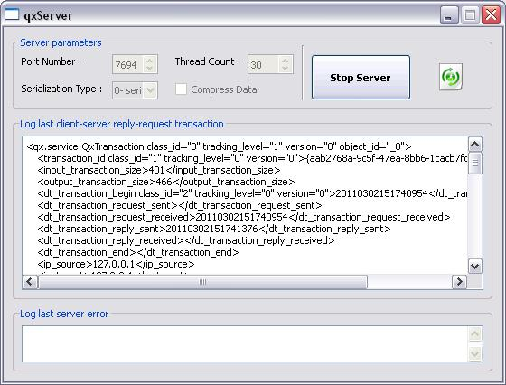

Le tutoriel qxClientServer a pour objectif d'expliquer le fonctionnement du module QxService de la bibliothèque QxOrm.
Le module QxService permet de créer rapidement un serveur d'applications C++ performant (notion de services avec demande du client et réponse du serveur).
Les sources du projet qxClientServer sont disponibles dans le dossier ./test/qxClientServer/ de la distribution de QxOrm.
Il est conseillé d'avoir lu le tutoriel qxBlog avant de lire cet article, notamment tout ce qui concerne la fonction de mapping de QxOrm : void qx::register_class<T>(...).
Remarque : pour activer le module QxService (nécessaire pour compiler les sources de ce tutoriel), il faut définir l'option de compilation _QX_ENABLE_QT_NETWORK dans le fichier de configuration QxOrm.pri.
Pour plus de détails sur ces options de compilation, rendez-vous sur le manuel utilisateur de la bibliothèque QxOrm.
Le résultat final de ce tutoriel comporte deux exécutables et une couche service :
- qxServer : serveur d'applications C++ avec une interface utilisateur pour paramétrer le serveur et un champ pour afficher la dernière transaction effectuée entre le client et le serveur ;
- qxClient : interface utilisateur contenant plusieurs boutons pour exécuter différentes requêtes au serveur ;
- qxService : couche service, le serveur et le client partagent cette même couche pour transférer les données et appeler les services.
Le tutoriel qxClientServer est constitué des étapes suivantes :
Remarque : ce tutoriel est également disponible sur le site www.developpez.com.
|

QxOrm library has been accepted into the Qt Ambassador Program
|

Remarque : pour plus de détails sur la notion de socket, de thread et de réseau, le site de Qt propose des tutoriels sur l'utilisation du module QtNetwork :
1- Création de l'interface serveur : qxServer
Le projet qxServer contient une seule fenêtre : l'interface utilisateur a été réalisée avec l'outil Qt Designer proposé par la bibliothèque Qt.
Cette interface a pour seul objectif d'afficher à l'utilisateur la dernière transaction client-serveur, et de pouvoir configurer certains paramètres du serveur.
Pour une utilisation réelle (logiciel de production), il est conseillé de proposer un sytème de log plutôt qu'un affichage à l'utilisateur.
Une interface la plus minimaliste possible (voire aucune interface) est de manière générale la solution la plus optimale pour un serveur d'applications.
Les fichiers main_dlg.h et main_dlg.cpp correspondent au code C++ de l'interface du projet qxServer.
1.1- Description du fichier main_dlg.h
#ifndef _QX_SERVER_MAIN_DLG_H_
#define _QX_SERVER_MAIN_DLG_H_
#include "../qt/ui/include/ui_qxServer.h"
class main_dlg : public QWidget, private Ui::dlgServer
{ Q_OBJECT
private:
qx::service::QxThreadPool_ptr m_pThreadPool;
public:
main_dlg(QWidget * parent = NULL) : QWidget(parent), Ui::dlgServer() { main_dlg::init(); }
virtual ~main_dlg() { ; }
private:
void init();
void loadServices();
private Q_SLOTS:
void onClickStartStop();
void onCboIndexChanged(int index);
void onError(const QString & err, qx::service::QxTransaction_ptr transaction);
void onServerIsRunning(bool bIsRunning, qx::service::QxServer * pServer);
void onTransactionFinished(qx::service::QxTransaction_ptr transaction);
};
#endif // _QX_SERVER_MAIN_DLG_H_
|
La variable m_pThreadPool de type qx::service::QxThreadPool_ptr contient toute la logique du serveur d'applications.
Cette logique est gérée de manière automatique par la bibliothèque QxOrm.
La méthode init() permet d'initialiser les paramètres par défaut du serveur, de connecter les évènements SIGNAL-SLOT et de lancer automatiquement le serveur.
Nous allons voir tout ceci plus en détails avec l'implémentation des méthodes dans le fichier main_dlg.cpp...
1.2- Description du fichier main_dlg.cpp, méthode init()
void main_dlg::init()
{
setupUi(this);
QObject::connect(btnStartStop, SIGNAL(clicked()), this, SLOT(onClickStartStop()));
QObject::connect(cboSerializationType, SIGNAL(currentIndexChanged(int)), this, SLOT(onCboIndexChanged(int)));
cboSerializationType->addItem("0- serialization_binary", QVariant((int)qx::service::QxConnect::serialization_binary));
cboSerializationType->addItem("1- serialization_xml", QVariant((int)qx::service::QxConnect::serialization_xml));
cboSerializationType->addItem("2- serialization_text", QVariant((int)qx::service::QxConnect::serialization_text));
cboSerializationType->addItem("3- serialization_portable_binary", QVariant((int)qx::service::QxConnect::serialization_portable_binary));
cboSerializationType->addItem("4- serialization_wide_binary", QVariant((int)qx::service::QxConnect::serialization_wide_binary));
cboSerializationType->addItem("5- serialization_wide_xml", QVariant((int)qx::service::QxConnect::serialization_wide_xml));
cboSerializationType->addItem("6- serialization_wide_text", QVariant((int)qx::service::QxConnect::serialization_wide_text));
cboSerializationType->addItem("7- serialization_polymorphic_binary", QVariant((int)qx::service::QxConnect::serialization_polymorphic_binary));
cboSerializationType->addItem("8- serialization_polymorphic_xml", QVariant((int)qx::service::QxConnect::serialization_polymorphic_xml));
cboSerializationType->addItem("9- serialization_polymorphic_text", QVariant((int)qx::service::QxConnect::serialization_polymorphic_text));
cboSerializationType->setCurrentIndex(cboSerializationType->findData(QVariant((int)qx::service::QxConnect::getSingleton()->getSerializationType())));
spinPortNumber->setValue(7694);
spinThreadCount->setValue(qx::service::QxConnect::getSingleton()->getThreadCount());
onServerIsRunning(false, NULL);
onClickStartStop();
}
|
L'évènement onClickStartStop() permet de démarrer/arrêter le serveur.
Le serveur d'applications peut sérialiser les réponses à envoyer aux clients de plusieurs façons : ce paramètre est disponible avec la combobox cboSerializationType.
Pour plus d'informations sur les différents types de sérialisation supportés par la bibliothèque QxOrm, suivre ce lien du manuel utilisateur.
D'une manière générale, la sérialisation binaire est fortement conseillée pour une transaction réseau car elle est plus rapide à exécuter et permet de limiter le traffic sur le réseau.
On définit également le port d'écoute du serveur d'applications avec le champ spinPortNumber.
Un paramètre important est le nombre de threads disponibles sur le serveur d'applications : celà correspond aux nombres de clients pouvant se connecter au serveur simultanément.
La valeur par défaut de ce paramètre est 30, vous pouvez modifier cette valeur suivant la charge estimée de votre serveur d'applications.
Si le nombre de clients dépasse le nombre de threads disponibles, la requête est mise en attente : dès qu'un thread se libère, alors la requête s'exécute normalement.
Tout ceci est géré automatiquement par la bibliothèque QxOrm : il est juste important de faire une estimation de la charge que pourra avoir votre serveur d'applications.
Enfin, l'appel à onClickStartStop() permet de démarrer automatiquement le serveur dès l'exécution du programme qxServer.
1.3- Description du fichier main_dlg.cpp, méthode loadServices()
void main_dlg::loadServices()
{ server_infos dummy_01; Q_UNUSED(dummy_01);
}
|
La méthode loadServices() est l'unique dépendance avec les services proposés par le serveur d'applications.
Elle sert uniquement à créer une instance fantôme pour être certain que la DLL contenant la liste des services soient correctement chargée au démarrage de l'application.
Pour un logiciel en production, il peut être intéressant à ce niveau de proposer un système de plugins pour charger les différents services.
1.4- Description du fichier main_dlg.cpp, méthode onClickStartStop()
void main_dlg::onClickStartStop()
{
if (m_pThreadPool)
{
m_pThreadPool->disconnect();
m_pThreadPool.reset();
txtError->setPlainText("");
txtTransaction->setPlainText("");
onServerIsRunning(false, NULL);
}
else
{
qx::service::QxConnect::getSingleton()->setPort(spinPortNumber->value());
qx::service::QxConnect::getSingleton()->setThreadCount(spinThreadCount->value());
qx::service::QxConnect::getSingleton()->setSerializationType((qx::service::QxConnect::serialization_type)
(cboSerializationType->itemData(cboSerializationType->currentIndex()).toInt()));
qx::service::QxConnect::getSingleton()->setCompressData(chkCompressData->isChecked());
qx::service::QxConnect::getSingleton()->setEncryptData(chkEncryptData->isChecked());
m_pThreadPool.reset(new qx::service::QxThreadPool());
QObject::connect(m_pThreadPool.get(), SIGNAL(error(const QString &, qx::service::QxTransaction_ptr)), this,
SLOT(onError(const QString &, qx::service::QxTransaction_ptr)));
QObject::connect(m_pThreadPool.get(), SIGNAL(serverIsRunning(bool, qx::service::QxServer *)), this,
SLOT(onServerIsRunning(bool, qx::service::QxServer *)));
QObject::connect(m_pThreadPool.get(), SIGNAL(transactionFinished(qx::service::QxTransaction_ptr)), this,
SLOT(onTransactionFinished(qx::service::QxTransaction_ptr)));
m_pThreadPool->start();
}
}
|
La méthode onClickStartStop() permet de démarrer/arrêter le serveur d'applications : elle s'occupe de créer une instance de type qx::service::QxThreadPool_ptr ou bien de la détruire.
Si la variable m_pThreadPool est valorisée, alors celà signifie que l'on souhaite arrêter le serveur : m_pThreadPool.reset();.
Sinon, le serveur est arrêté donc on souhaite le démarrer :
m_pThreadPool.reset(new qx::service::QxThreadPool());.
m_pThreadPool->start();.
Le paramétrage du serveur est effectué grâce au singleton qx::service::QxConnect::getSingleton().
Enfin, l'interface utilisateur s'abonne aux évènements envoyés par le serveur d'applications (mécanisme SIGNAL-SLOT de Qt) pour récupérer une erreur ou bien afficher la dernière transaction client-serveur.
1.5- Description du fichier main_dlg.cpp, méthodes onError() et onTransactionFinished()
void main_dlg::onError(const QString & err, qx::service::QxTransaction_ptr transaction)
{
if (err.isEmpty()) { txtError->setPlainText(""); return; }
QString errText = QDateTime::currentDateTime().toString("dd.MM.yyyy hh:mm") + " : " + err;
if (transaction) { errText += QString("\r\n\r\n") + qx::serialization::xml::to_string(* transaction); }
txtError->setPlainText(errText.replace("\t", " "));
}
void main_dlg::onTransactionFinished(qx::service::QxTransaction_ptr transaction)
{
if (! transaction) { txtTransaction->setPlainText(""); return; }
QString text = qx::serialization::xml::to_string(* transaction);
txtTransaction->setPlainText(text.replace("\t", " "));
}
|
Toutes les transactions entre client et serveur sont représentées par la classe qx::service::QxTransaction_ptr.
Cette classe contient toutes les informations nécessaires à l'exécution d'un service (identifiant unique, date-heure, requête du client, service à exécuter, réponse du serveur, code et message d'erreur, etc.).
La transaction est sérialisée au format XML (ou JSON) avant d'être affichée à l'utilisateur dans le champ txtTransaction.
Cette sérialisation est indépendante de la réponse envoyée au client qui, par défaut, est au format binaire.
1.6- Résultat obtenu pour le projet qxServer
Et... c'est tout : vous pouvez constater que l'écriture d'un serveur d'applications est extrêmement simple avec la bibliothèque QxOrm.
Votre serveur d'applications est prêt pour proposer de multiples services aux différents clients.
Voici le résultat obtenu :

2- Création de la couche service : qxService
La couche service doit être partagée entre le client et le serveur.
La compilation du projet qxService crée deux DLL (ou fichiers *.so sous Linux) : qxServiceClient et qxServiceServer.
Une option de compilation _QX_SERVICE_MODE_CLIENT permet de faire la distinction entre le client et le serveur.
L'outil qmake de Qt et le système de fichiers *.pro et *.pri permettent de créer facilement ce type d'architecture :
- Le fichier qxService.pri correspond au tronc commun des deux DLL, c'est-à-dire l'ensemble des dépendances et des fichiers à compiler ;
- Le fichier qxServiceClient.pro est spécifique au mode client : définition de l'option de compilation _QX_SERVICE_MODE_CLIENT et du nom de la DLL ;
- Le fichier qxServiceServer.pro est spécifique au mode serveur : définition du nom de la DLL.
Il est important de signaler que ce mécanisme permet au programme client de partager les mêmes fichiers que le programme serveur.
La partie cliente n'a aucun code à écrire pour pouvoir appeler un service : le serveur peut livrer la liste des fichiers de type headers, les .dll et .lib (ou *.so sous Linux).
2.1- Ecriture du premier service : récupérer la date-heure courante du serveur
Le premier service proposé par notre serveur d'applications de test est relativement simple : il consiste à renvoyer aux clients la date-heure courante du serveur.
Ce service est disponible avec la classe server_infos : fichiers server_infos.h et server_infos.cpp.
Une même classe peut proposer plusieurs services : la classe server_infos pourrait par exemple renvoyer en plus de la date-heure courante, un nom de machine, une fréquence processeur du serveur, etc.
Chaque classe service possède des paramètres d'entrée (demande du client) et des paramètres de sortie (réponse du serveur).
Une classe paramètre (entrée ou sortie) doit hériter de la classe qx::service::IxParameter et doit être sérialisable.
Une classe service doit hériter du template qx::service::QxService<INPUT, OUTPUT> et doit définir une liste de méthodes (services disponibles).
Il est conseillé d'écrire les classes paramètres d'entrée, paramètres de sortie et services dans le même fichier.
2.2- Description du fichier server_infos.h
#ifndef _QX_SERVICE_SERVER_INFOS_H_
#define _QX_SERVICE_SERVER_INFOS_H_
class QX_SERVICE_DLL_EXPORT server_infos_input : public qx::service::IxParameter
{ ; };
QX_REGISTER_HPP_QX_SERVICE(server_infos_input, qx::service::IxParameter, 0)
typedef boost::shared_ptr<server_infos_input> server_infos_input_ptr;
class QX_SERVICE_DLL_EXPORT server_infos_output : public qx::service::IxParameter
{ public: QDateTime current_date_time; };
QX_REGISTER_HPP_QX_SERVICE(server_infos_output, qx::service::IxParameter, 0)
typedef boost::shared_ptr<server_infos_output> server_infos_output_ptr;
typedef qx::service::QxService<server_infos_input, server_infos_output> server_infos_base_class;
class QX_SERVICE_DLL_EXPORT server_infos : public server_infos_base_class
{
public:
server_infos() : server_infos_base_class("server_infos") { ; }
virtual ~server_infos() { ; }
void get_current_date_time();
};
QX_REGISTER_HPP_QX_SERVICE(server_infos, qx::service::IxService, 0)
typedef boost::shared_ptr<server_infos> server_infos_ptr;
#endif // _QX_SERVICE_SERVER_INFOS_H_
|
Le fichier server_infos.h possède trois classes :
- server_infos_input : hérite de qx::service::IxParameter et correspond aux paramètres d'entrée du service (demande du client). Notre service de test n'a pas besoin de paramètres en entrée, donc cette classe ne contient aucune propriété ;
- server_infos_output : hérite de qx::service::IxParameter et correspond aux paramètres de sortie du service (réponse du serveur). Cette classe contient une seule propriété, la date-heure courante du serveur (QDateTime current_date_time) ;
- server_infos : hérite de qx::service::QxService<INPUT, OUTPUT> et contient la liste des services disponibles : une seule méthode pour récupérer la date-heure courante du serveur.
Ces trois classes doivent être enregistrées dans le contexte QxOrm, de la même façon qu'une classe persistante (voir le tutoriel qxBlog).
C'est pourquoi nous utilisons la macro QX_REGISTER_HPP_QX_SERVICE pour ces trois classes.
De plus, pour simplifier l'écriture des pointeurs, la gestion de la mémoire et éviter les problèmes de fuites mémoires, nous utilisons les pointeurs intelligents de la bibliothèque boost : boost::shared_ptr.
Le module QxService travaille essentiellement avec des pointeurs intelligents, c'est pourquoi il est fortement conseillé de créer les typedef correspondants, par exemple :
typedef boost::shared_ptr<server_infos_input> server_infos_input_ptr;.
typedef boost::shared_ptr<server_infos_output> server_infos_output_ptr;.
typedef boost::shared_ptr<server_infos> server_infos_ptr;.
Enfin, le constructeur du service doit indiquer en paramètre le nom de la classe sous forme de chaîne de caractères : ceci est indispensable pour le moteur d'introspection de QxOrm pour pouvoir instancier dynamiquement les services correspondant aux requêtes des clients.
2.3- Description du fichier server_infos.cpp
#include "../../include/precompiled.h"
#include "../../include/service/server_infos.h"
#include <QxOrm_Impl.h>
QX_REGISTER_CPP_QX_SERVICE(server_infos_input)
QX_REGISTER_CPP_QX_SERVICE(server_infos_output)
QX_REGISTER_CPP_QX_SERVICE(server_infos)
namespace qx {
template <> void register_class(QxClass<server_infos_input> & t)
{ Q_UNUSED(t); }
template <> void register_class(QxClass<server_infos_output> & t)
{ t.data(& server_infos_output::current_date_time, "current_date_time"); }
template <> void register_class(QxClass<server_infos> & t)
{ t.fct_0<void>(& server_infos::get_current_date_time, "get_current_date_time"); }
}
#ifdef _QX_SERVICE_MODE_CLIENT
void server_infos::get_current_date_time()
{ qx::service::execute_client(this, "get_current_date_time"); }
#else // _QX_SERVICE_MODE_CLIENT
void server_infos::get_current_date_time()
{
server_infos_output_ptr output = server_infos_output_ptr(new server_infos_output());
output->current_date_time = QDateTime::currentDateTime();
setOutputParameter(output);
setMessageReturn(true);
}
#endif // _QX_SERVICE_MODE_CLIENT
|
Le fichier server_infos.cpp contient l'implémentation du service pour le mode client et le mode serveur : c'est la macro _QX_SERVICE_MODE_CLIENT qui fait la distinction entre client et serveur au moment de la compilation du projet.
La macro QX_REGISTER_CPP_QX_SERVICE permet d'enregistrer les trois classes dans le contexte QxOrm, de la même façon qu'une classe persistante (voir le tutoriel qxBlog).
Ensuite, nous écrivons la méthode de mapping void qx::register_class(...) pour les trois classes du service :
- Les deux classes de paramètres enregistrent les propriétés utilisées pour effectuer une demande du client (aucune pour notre service de test), et les propriétés qui seront renvoyées pour la réponse du serveur (date-heure courante : t.data(& server_infos_output::current_date_time, "current_date_time");) ;
- La classe service doit enregistrer la liste des méthodes disponibles, dans notre cas : t.fct_0<void>(& server_infos::get_current_date_time, "get_current_date_time");.
Remarque : toutes les méthodes de type service doivent avoir la même signature : pas de valeur de retour, et pas d'argument (par exemple : void my_service()).
En effet, dans un service, les paramètres d'entrée sont disponibles par la méthode getInputParameter() (de type server_infos_input_ptr dans notre exemple).
Les paramètres de sortie peuvent être valorisés par la méthode setOutputParameter() (de type server_infos_output_ptr dans notre exemple).
Une valeur de retour de type qx_bool permet d'indiquer que la transaction s'est déroulée normalement, ou bien qu'une erreur quelconque est survenue (avec libellé et code de l'erreur).
Il est très important d'écrire setMessageReturn(true); à la fin de chaque méthode service pour indiquer que tout s'est bien déroulé.
La dernière partie de notre fichier contient l'implémentation de la méthode server_infos::get_current_date_time() pour le mode client et serveur :
- Pour le mode client, le code est très simple et sera le même pour tous les services : qx::service::execute_client(this, "get_current_date_time"); ;
- Pour le mode serveur, notre service de test est très simple : on valorise la date-heure courante, on la transfère dans les paramètres de sortie, puis on indique que la transaction s'est déroulée sans aucune erreur.
2.4- Ecriture du second service : opérations avec une classe persistante
Le projet qxService contient un second exemple de service plus complet avec une classe persistante (classe user), et des actions sur une base de données (SELECT, INSERT, UPDATE, DELETE, etc.).
Ce deuxième exemple fait transiter sur le réseau des structures complexes : pointeurs, pointeurs intelligents, collections, critères de recherche, etc.
Nous ne détaillerons pas ce second service dans le tutoriel, le principe étant identique au premier service :
#include "../../include/precompiled.h"
#include "../../include/service/user_service.h"
#include "../../include/dao/user_manager.h"
#include <QxOrm_Impl.h>
QX_REGISTER_CPP_QX_SERVICE(user_service_input)
QX_REGISTER_CPP_QX_SERVICE(user_service_output)
QX_REGISTER_CPP_QX_SERVICE(user_service)
namespace qx {
template <> void register_class(QxClass<user_service_input> & t)
{
t.data(& user_service_input::id, "id");
t.data(& user_service_input::user, "user");
t.data(& user_service_input::criteria, "criteria");
}
template <> void register_class(QxClass<user_service_output> & t)
{
t.data(& user_service_output::user, "user");
t.data(& user_service_output::list_of_users, "list_of_users");
}
template <> void register_class(QxClass<user_service> & t)
{
t.fct_0<void>(& user_service::insert, "insert");
t.fct_0<void>(& user_service::update, "update");
t.fct_0<void>(& user_service::remove, "remove");
t.fct_0<void>(& user_service::remove_all, "remove_all");
t.fct_0<void>(& user_service::fetch_by_id, "fetch_by_id");
t.fct_0<void>(& user_service::fetch_all, "fetch_all");
t.fct_0<void>(& user_service::get_by_criteria, "get_by_criteria");
}
}
#ifdef _QX_SERVICE_MODE_CLIENT
void user_service::insert() { qx::service::execute_client(this, "insert"); }
void user_service::update() { qx::service::execute_client(this, "update"); }
void user_service::remove() { qx::service::execute_client(this, "remove"); }
void user_service::remove_all() { qx::service::execute_client(this, "remove_all"); }
void user_service::fetch_by_id() { qx::service::execute_client(this, "fetch_by_id"); }
void user_service::fetch_all() { qx::service::execute_client(this, "fetch_all"); }
void user_service::get_by_criteria() { qx::service::execute_client(this, "get_by_criteria"); }
#else // _QX_SERVICE_MODE_CLIENT
void user_service::insert()
{
user_service_input_ptr input = getInputParameter();
if (! input) { setMessageReturn(0, "invalid input parameter to call service 'user_service::insert()'"); return; }
QSqlError err = user_manager().insert(input->user);
if (err.isValid()) { setMessageReturn(0, err.text()); return; }
user_service_output_ptr output = user_service_output_ptr(new user_service_output());
output->user = input->user;
setOutputParameter(output);
setMessageReturn(true);
}
void user_service::update()
{
user_service_input_ptr input = getInputParameter();
if (! input) { setMessageReturn(0, "invalid input parameter to call service 'user_service::update()'"); return; }
QSqlError err = user_manager().update(input->user);
if (err.isValid()) { setMessageReturn(0, err.text()); }
else { setMessageReturn(true); }
}
void user_service::remove()
{
user_service_input_ptr input = getInputParameter();
if (! input) { setMessageReturn(0, "invalid input parameter to call service 'user_service::remove()'"); return; }
user_ptr user_tmp = user_ptr(new user());
user_tmp->id = input->id;
QSqlError err = user_manager().remove(user_tmp);
if (err.isValid()) { setMessageReturn(0, err.text()); }
else { setMessageReturn(true); }
}
void user_service::remove_all()
{
QSqlError err = user_manager().remove_all();
if (err.isValid()) { setMessageReturn(0, err.text()); }
else { setMessageReturn(true); }
}
void user_service::fetch_by_id()
{
user_service_input_ptr input = getInputParameter();
if (! input) { setMessageReturn(0, "invalid input parameter to call service 'user_service::fetch_by_id()'"); return; }
user_ptr user_output = user_ptr(new user());
user_output->id = input->id;
QSqlError err = user_manager().fetch_by_id(user_output);
if (err.isValid()) { setMessageReturn(0, err.text()); return; }
user_service_output_ptr output = user_service_output_ptr(new user_service_output());
output->user = user_output;
setOutputParameter(output);
setMessageReturn(true);
}
void user_service::fetch_all()
{
list_of_users_ptr list_of_users_output = list_of_users_ptr(new list_of_users());
QSqlError err = user_manager().fetch_all(list_of_users_output);
if (err.isValid()) { setMessageReturn(0, err.text()); return; }
user_service_output_ptr output = user_service_output_ptr(new user_service_output());
output->list_of_users = list_of_users_output;
setOutputParameter(output);
setMessageReturn(true);
}
void user_service::get_by_criteria()
{
user_service_input_ptr input = getInputParameter();
if (! input) { setMessageReturn(0, "invalid input parameter to call service 'user_service::get_by_criteria()'"); return; }
list_of_users_ptr list_of_users_output = list_of_users_ptr(new list_of_users());
QSqlError err = user_manager().get_by_criteria(input->criteria, list_of_users_output);
if (err.isValid()) { setMessageReturn(0, err.text()); return; }
user_service_output_ptr output = user_service_output_ptr(new user_service_output());
output->list_of_users = list_of_users_output;
setOutputParameter(output);
setMessageReturn(true);
}
#endif // _QX_SERVICE_MODE_CLIENT
|
A ce niveau du tutoriel, notre serveur d'applications C++ est terminé et propose plusieurs services.
Il reste à présent à écrire le code client qui va appeler tous les services que nous avons mis en place...
3- Création de l'interface cliente : qxClient
De la même façon que le projet qxServer, le projet qxClient possède une interface utilisateur construite avec l'outil Qt Designer de la bibliothèque Qt.
Cette interface possède plusieurs boutons pour appeler l'ensemble des services proposés par notre serveur d'applications.
L'interface permet également d'indiquer une adresse ip et un numéro de port pour se connecter au serveur d'applications.

3.1- Description de la méthode onClickBtnDateTime()
Comment récupérer la date-heure courante du serveur d'applications ?
Voici le code qui s'exécute lorsque l'utilisateur clique sur le bouton Get Server DateTime :
void main_dlg::onClickBtnDateTime()
{ server_infos service;
service.get_current_date_time(); updateLastTransactionLog(service.getTransaction());
}
|
Comme vous pouvez le constater, la partie cliente n'a aucun code spécifique à écrire pour pouvoir appeler un service.
Il suffit d'instancier un service, puis d'appeler la méthode qui nous intéresse : get_current_date_time().
La méthode updateLastTransactionLog() permet d'afficher la dernière transaction client-serveur (au format XML ou JSON) exécutée.
Si une erreur s'est produite, alors un message apparaît à l'écran pour le signaler à l'utilisateur.
Pour savoir si le service s'est exécuté correctement, il faut utiliser la méthode : service.getMessageReturn(); (de type qx_bool qui peut contenir un code et un libellé d'une éventuelle erreur).
Enfin, pour récupérer la réponse du serveur (donc sa date-heure courante), il faut utiliser la méthode : service.getOutputParameter(); (de type user_service_output_ptr).
3.2- Description de la méthode onClickBtnDateTimeAsync()
void main_dlg::onClickBtnDateTimeAsync()
{
if (m_pDateTimeAsync) { qDebug("[QxOrm] '%s' transaction is already running", "server_infos::get_current_date_time"); return; } server_infos_ptr service = server_infos_ptr(new server_infos());
m_pDateTimeAsync.reset(new qx::service::QxClientAsync());
QObject::connect(m_pDateTimeAsync.get(), SIGNAL(finished()), this, SLOT(onDateTimeAsyncFinished()));
m_pDateTimeAsync->setService(service, "get_current_date_time");
m_pDateTimeAsync->start();
}
void main_dlg::onDateTimeAsyncFinished()
{
if (! m_pDateTimeAsync || ! m_pDateTimeAsync->getService()) { return; }
updateLastTransactionLog(m_pDateTimeAsync->getService()->getTransaction());
m_pDateTimeAsync.reset();
}
|
Ce second exemple correspond au bouton Get Server DateTime Async de l'interface utilisateur.
Il montre comment appeler un service de manière asynchrone, c'est-à-dire sans bloquer l'IHM en attendant la réponse du serveur.
La bibliothèque QxOrm propose la classe qx::service::QxClientAsync pour simplifier les appels asynchrones.
Le mécanisme des appels asynchrones avec le module QxService est très simple :
- création d'une instance d'un service ;
- création d'une instance de type qx::service::QxClientAsync ;
- connexion à l'évènement finished (pour indiquer qu'une réponse du serveur vient d'arriver) ;
- passage de l'instance du service et de la méthode à appeler (sous forme de chaine de caractères) à l'objet qx::service::QxClientAsync ;
- démarrage de la transaction avec l'appel de la méthode start().
3.3- Description de la méthode onClickBtnAddUser()
void main_dlg::onClickBtnAddUser()
{ user_service_input_ptr input = user_service_input_ptr(new user_service_input());
input->user = fileUser(); user_service service;
service.setInputParameter(input);
service.insert(); user_ptr output = (service.isValidWithOutput() ? service.getOutputParameter()->user : user_ptr());
if (output) { fillUser(output); } updateLastTransactionLog(service.getTransaction());
}
|
Ce 3ème exemple correspond au bouton Add dans la section User transaction.
Il permet à l'utilisateur d'ajouter une nouvelle personne dans la base de données.
Cet exemple nous montre comment passer une structure (classe user) en paramètre d'entrée d'un service.
La méthode fileUser() permet de créer une instance de type user et de valoriser ses propriétés en fonction des champs de l'IHM.
Cette instance est ensuite utilisée comme paramètre d'entrée de notre service.
Si la transaction s'est déroulée correctement, le paramètre de retour (réponse du serveur) contient lui aussi une instance de type user avec le nouvel identifiant qui vient d'être ajouté en base de données.
On utilise alors la méthode fillUser() pour mettre à jour l'interface utilisateur en fonction de la réponse du serveur et afficher ainsi le nouvel identifiant.
3.4- Description de la méthode onClickBtnGetAllUsers()
void main_dlg::onClickBtnGetAllUsers()
{ user_service service;
service.fetch_all(); list_of_users_ptr output = (service.isValidWithOutput() ? service.getOutputParameter()->list_of_users : list_of_users_ptr());
if (output) { QMessageBox::information(this, "qxClient - get all users", "database contains '" + QString::number(output->size()) + "' user(s)."); } updateLastTransactionLog(service.getTransaction());
}
|
Ce 4ème exemple correspond au bouton Get All de la section User transaction.
Il permet de récupérer la liste de tous les user présents dans la base de données.
Le paramètre de retour est une liste fortement typée : il est possible d'utiliser les collections des bibliothèques stl, boost, Qt ou qx::QxCollection.
Le module QxService permet donc d'échanger des structures complexes entre client et serveur.
A présent, bon courage avec le module QxService... ;o)
|